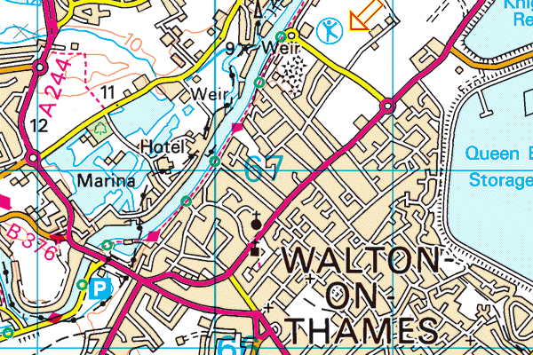

Derek Crookes Under 13 Inter-Counties Match
Saturday 29 July 2023
Elmbridge Sports Hub, Walton-on-Thames
This is an invitation match organised by Surrey County AA. Derek Crookes was one of the instigators of this fixture and the meeting organiser for many years. After his death in September 2012, the meeting was named in his memory.
It is contested by the following counties: Bedfordshire, Berkshire, Buckinghamshire, Dorset, Essex, Hampshire, Hertfordshire, Kent, Middlesex, Oxfordshire, Suffolk, Surrey and Sussex. The fixture has been held for the past several years at Kingsmeadow Stadium, Kingston-upon-Thames, since 2018 known as the Weir Archer Athletics & Fitness Centre.
Results
Under 13 Girls (2nd)
Under 13 Boys (5th)
Results on the Power of 10 website
Team photos


Location
The Elmbridge Xcel Sports Hub is in Waterside Drive, Walton-on-Thames. Its postcode is KT12 2JP.

Timetable
The timetable for this fixture has been released: Download timetable (PDF)
Team news
The following teams have been selected by team managers Jasmine and Rob Larsen ( ):
Girls
| Event | 'A' string | 'B' string |
|---|---|---|
| 100m | Amelie van Heerden (Guernsey) | Geneva Frankson (Jersey Spartan) |
| 200m | Amelie van Heerden (Guernsey) | Sofia Waugh (Southampton) |
| 800m | Celeste Vickers (Basingstoke & Mid Hants) | Ryley Polmeer (New Forest Junior) |
| 1500m | Thea Thompson (Jersey Spartan) | Katharina Hoppe (Southampton) |
| 70m Hurdles | Lexie Divers (Winchester & District) | Ryley Polmeer (New Forest Junior) |
| High Jump | Scarlett Taylor (Aldershot, Farnham & District) | |
| Long Jump | Lily Gray (Andover) | Scarlett Taylor (Aldershot, Farnham & District) |
| Shot | Hallie Eldridge (Winchester & District) | Lily Ward (Basingstoke & Mid Hants) |
| Discus | Lily Ward (Basingstoke & Mid Hants) | Celeste Vickers (Basingstoke & Mid Hants) |
| Javelin | Ava Cassia (Basingstoke & Mid Hants) | Hallie Eldridge (Winchester & District) |
| 4x100m Relay | Amelie van Heerden, Geneva Frankson, Sofia Waugh, Amalie Calliste (Winchester & District) | |
Boys
| Event | 'A' string | 'B' string |
|---|---|---|
| 100m | Remy Deegan (Isle of Wight) | Kai La Croix (City of Portsmouth) |
| 200m | Remy Deegan (Isle of Wight) | Emil Friedrich (Guernsey |
| 800m | Max Roger (Guernsey) | Alfie Roger (Guernsey) |
| 1500m | Archie Burniston (Basingstoke & Mid Hants) | Justin Klepacz (City of Portsmouth) |
| 75m Hurdles | Jackson Purdie (Winchester & District) | Emil Friedrich (Guernsey) |
| High Jump | Leo Davies-Pratt (Winchester & District) | |
| Long Jump | Colm Robertson (New Forest Junior) | Tom Pate (Winchester & District) |
| Shot | Tobi Adeniran (Basingstoke & Mid Hants) | Emil Friedrich (Guernsey) |
| Discus | Emil Larsen (Southampton) | Ewan Dermody (Southampton) |
| Javelin | Tom Pate (Winchester & District) | Emil Larsen (Southampton) |
| 4x100m Relay | Remy Deegan, Kai La Croix, Emil Friedrich, Aidon Gerald (City of Portsmouth) | |
Previous years' results
| Date | Under 13 Boys | Under 13 Girls |
| 29 July 2007 | 11th | 5th |
| 27 July 2008 | 5th | 8th |
| 26 July 2009 | 1st | 3rd |
| 25 July 2010 | 4th | 1st |
| 31 July 2011 | 3rd | 3rd |
| 22 July 2012 | 7th | 6th |
| 28 July 2013 | 6th | 7th |
| 27 July 2014 | 6th | 5th |
| 26 July 2015 | 8th | 3rd |
| 31 July 2016 | 2nd | 6th |
| 29 July 2017 | 5th | 1st |
| 28 July 2018 | 4th | 1st |
| 27 July 2019 | 6th | 6th |
| No competition in 2020 or 2021 | ||
| 24 July 2022 | 5th | 3rd |
Results for years since 1993 are available on the event website: www.u13ic.org.uk